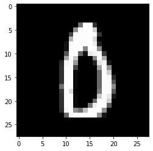

Test Deployed Model¶
Import libraries¶
import os
import requests
import json
from tensorflow.keras.datasets import mnist
import numpy as np
login into Openshift¶
cluster_url = "https://api.zero.massopen.cloud:6443"
# Using token
token = os.environ["CLUSTER_TOKEN"]
!oc login --token=$token --server=$cluster_url
# # Using credentials
# username = os.environ["USERNAME"]
# password = os.environ["PASSWORD"]
# !oc login -u $username -p $password --insecure-skip-tls-verify $cluster_url
!oc project
Using project "thoth-deployment-examples" on server "https://api.cnv.massopen.cloud:6443".
!oc project thoth-deployment-examples
Now using project "thoth-deployment-examples" on server "https://api.cnv.massopen.cloud:6443".
!oc get pods
NAME READY STATUS RESTARTS AGE
elyra-aidevsecops-tutorial-2-deploy 0/1 Completed 0 12d
elyra-aidevsecops-tutorial-2-wmml6 1/1 Running 0 12d
!oc get routes
NAME HOST/PORT PATH SERVICES PORT TERMINATION WILDCARD
elyra-aidevsecops-tutorial elyra-aidevsecops-tutorial-thoth-deployment-examples.apps.cnv.massopen.cloud elyra-aidevsecops-tutorial <all> None
Test deployed Model¶
(x_train, y_train), (x_test, y_test) = mnist.load_data()
# Convert to float32.
x_test = np.array(x_test, np.float32)
# Normalize images value from [0, 255] to [0, 1].
x_test = x_test / 255.0
addr = os.getenv(
"THOTH_AIDEVSECOPS_TUTORIAL_MODEL_URL",
"http://elyra-aidevsecops-tutorial-thoth-deployment-examples.apps.zero.massopen.cloud",
)
test_url = addr + "/predict"
# prepare headers for http request
headers = {"content-type": "application/json"}
# select one test image
img = x_test[5890]
data = json.dumps({"inputs": img.tolist()})
# Check which image is sent
# plt.imshow(img, cmap="gray")
# plt.show(block=False)
# plt.pause(1)
# plt.close()
print(f"Input image number: {y_test[5890]}")
# send http request with image and receive response
response = requests.post(test_url, data=data, headers=headers)
# decode response
json_response = response.json()
# {'prediction': 0, 'latency': 0.030432076993747614, 'probability': 1.0}
prediction = json_response["prediction"]
latency = json_response["latency"]
probability = json_response["probability"]
print(
f"Model predicted {prediction} in {latency} s with probability {probability}"
)

The number in the image is 0 with probability 1.0